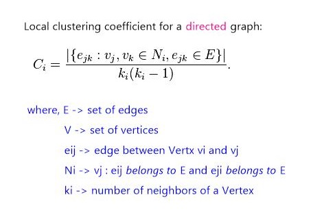

Neighborhood methods
Socialize with your neighbors

This article is a step by step guide to gain familiarity with the neighborhood methods of Gelly. We will study them using the problem of calculating Local Clustering Coefficient as example. In particular, we will get acquaintance with the reduceOnEdges() and reduceOnNeighbors() aggregation methods. Moreover, we will also get to meet our friend from the last tutorial, joinWithVertices(), again.
Tools at hand
Neighborhood methods allow vertices to perform an aggregation on their first-hop neighborhood. reduceOnEdges() can be used to compute an aggregation on the values of the neighboring edges of a vertex and reduceOnNeighbors() can be used to compute an aggregation on the values of the neighboring vertices. The neighborhood scope is defined by the EdgeDirection parameter, which takes the values IN, OUT or ALL. IN will gather all in-coming edges (neighbors) of a vertex, OUT will gather all out-going edges (neighbors), while ALL will gather all edges (neighbors).
What is this Local Clustering Coefficient?
A clustering coefficient tells us the degree to which nodes in a graph tend to cluster together. There are two versions of it: local and global. The global coefficient gives an overall indication of the clustering in the whole network, whereas the local one gives an insight into the local density. For a node, this is the number of links present over the total number of possible links between it's neighbors. Thus, the local clustering coefficient quantifies how close the node's neighbors are to being a complete graph and it can be calculated by the formula given below:

Practical overview
We are using the local clustering coefficient calculation as example in this tutorial, because as seen from the formula above, each node needs to know the "friendship status" of its neighborhood i.e. for each of it's neighbors, it needs to keep track of how well connected that neighbor is to it's other neighbors. As we will see, this information can be easily retrieved by invoking the aforementioned reduce methods.
To play around with the algorithm, any graph data set will do given that it is read in a manner appropriate for calculating our coefficients. In short, all we need is information regarding directed edges (source and target nodes). Hence, if the input data set has also edge values, that information can be ignored.
Graph creation
For graph creation in Gelly, refer to Tutorial1. To avoid repetitions, only code is given below; redundant explanation regarding the first part will be skipped and we will jump straight to the neighborhood methods.
The only point worth mentioning from the implementation point of view, is that the Vertex value has been allocated as a HashMap<String,HashSet
//read the Edge DataSet from the input file
DataSet<Edge<Long, NullValue>> links = env.readCsvFile(edgeInputPath)
.fieldDelimiter("\t")
.lineDelimiter("\n")
.types(Long.class, Long.class)
.map(new MapFunction<Tuple2<Long, Long>, Edge<Long, NullValue>>() {
public Edge<Long, NullValue> map(Tuple2<Long, Long> value) {
return new Edge<Long, NullValue>(value.f0, value.f1,
NullValue.getInstance());
}
});
//create a graph initializing vertex values
Graph<Long, HashMap<String,HashSet<Long>>, NullValue> graph =
Graph.fromDataSet(links, new MapFunction<Long, HashMap<String,HashSet<Long>>>() {
public HashMap<String, HashSet<Long>> map(Long value) throws Exception {
return new HashMap<String,HashSet<Long>>();
}
}, env);
Gather neighboorhood info
Now that we have a graph, we will use the groupReduceOnEdges() method with a user-defined function acting upon each of the resulting neighborhoods. The following code will collect the out-edges and in-edges for each Vertex and apply the NeighborsSet() function on each of the resulting neighborhoods. In order to decide whether to put the neighbor in the incoming Set or the outgoing Set, a check is made on the target Vertex of the edge under consideration. If the target Vertex is the node itself, it means that the edge is an incoming one.

//for each vertex save its incoming and outgoing neighbors
DataSet<Tuple2<Long,HashMap<String,HashSet<Long>>>> neighbSet =
graph.groupReduceOnEdges(new NeighborsSet(),EdgeDirection.ALL);
@SuppressWarnings("serial")
static final class NeighborsSet implements EdgesFunction
<Long,NullValue,Tuple2<Long,HashMap<String,HashSet<Long>>>> {
@Override
public void iterateEdges(
Iterable<Tuple2<Long, Edge<Long, NullValue>>> edges,
Collector<Tuple2<Long, HashMap<String,HashSet<Long>>>> out) throws Exception {
Long vertexId = null;
HashMap<String,HashSet<Long>> neighbList= new HashMap<String,HashSet<Long>>();
neighbList.put("incoming", new HashSet<Long>());
neighbList.put("outgoing", new HashSet<Long>());
for(Tuple2<Long, Edge<Long, NullValue>> e: edges){
vertexId= e.f0;
if(e.f1.getTarget().equals(vertexId))
neighbList.get("incoming").add(e.f1.getSource());
else
neighbList.get("outgoing").add(e.f1.getTarget());
}
out.collect(new Tuple2<Long, HashMap<String,HashSet<Long>>>(vertexId,neighbList));
}
}
Using the gathered info
First, we will update the values of the vertices in our graph by performing a join with the Data set <VertexId, HashMap of neighbors> obtained in the previous step. Then we will call the groupReduceOnNeighbors() with the ad-hoc CoefficientCalc() function. The latter is where the actual formula for calculating the local coefficient is implemented. For each Vertex, the for loop, as in the code below, is used to check whether a link exists between the neighbor in the current iteration of the loop and the other neighbors in common to the two nodes. The final data set will consist of <VertexId,coefficient>.

//perform a join to update the vertex values with neighbor's info
Graph<Long, HashMap<String,HashSet<Long>>, NullValue> graph2 = graph.joinWithVertices(neighbSet,
new MapFunction<Tuple2<HashMap<String,HashSet<Long>>,HashMap<String,HashSet<Long>>>,
HashMap<String,HashSet<Long>>>(){
@Override
public HashMap<String,HashSet<Long>> map(Tuple2<HashMap<String,HashSet<Long>>,
HashMap<String,HashSet<Long>>> value) throws Exception {
return value.f1;
}});
//calculate the local coeff for each vertex
DataSet<Tuple2<Long,Double>> coefficients =
graph2.groupReduceOnNeighbors(new CoefficientCalc(),EdgeDirection.ALL);
coefficients.print();
}
@SuppressWarnings("serial")
static class CoefficientCalc implements NeighborsFunctionWithVertexValue
<Long,HashMap<String,HashSet<Long>>,NullValue, Tuple2<Long,Double>> {
@Override
public void iterateNeighbors(
Vertex<Long, HashMap<String,HashSet<Long>>> vertex,
Iterable<Tuple2<Edge<Long, NullValue>, Vertex<Long, HashMap<String,HashSet<Long>>>>> neighbors,
Collector<Tuple2<Long, Double>> out) throws Exception {
double coefficient;
double numerator = 0;
HashSet<Long> neighbCount= new HashSet<Long>();
neighbCount.addAll(vertex.f1.get("incoming"));
neighbCount.addAll(vertex.f1.get("outgoing"));
//Set has been used to remove duplicate neighbors:
//those present both in incoming and outgoing are to be counted only once
int denominator =neighbCount.size()*(neighbCount.size()-1);
//to store links amongst neighbors
HashSet<String> links = new HashSet<String>();
for(Tuple2<Edge<Long,NullValue>,Vertex<Long,HashMap<String,HashSet<Long>>>> n : neighbors){
for(Long id : n.f1.getValue().get("incoming")){
if(vertex.f1.get("incoming").contains(id)||vertex.f1.get("outgoing").contains(id)){
links.add(""+id+" "+n.f1.f0);
}
}
for(Long id : n.f1.getValue().get("outgoing")){
if(vertex.f1.get("incoming").contains(id)||vertex.f1.get("outgoing").contains(id)){
links.add(""+n.f1.f0+" "+id);
}
}
}
//number of connections amongst neighbors
numerator=links.size();
if(denominator<1)
coefficient=0.0;
else
coefficient=(double)numerator/(double)denominator;
out.collect(new Tuple2<Long,Double>(vertex.f0,coefficient));
}}
And we are done
That was our quick introduction to Gelly's neighborhood methods. Play with them and "take advantage" of your neighborhood to the max!
Following is the link to the full code of the clustering coefficient example that we have discussed in this tutorial:LCC Solution